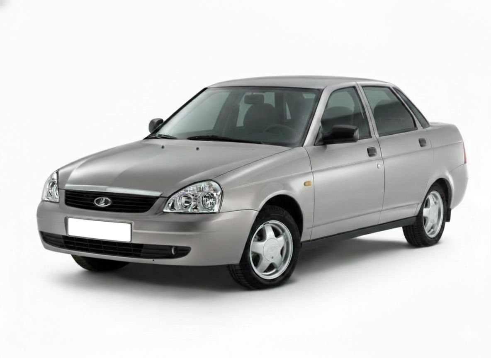
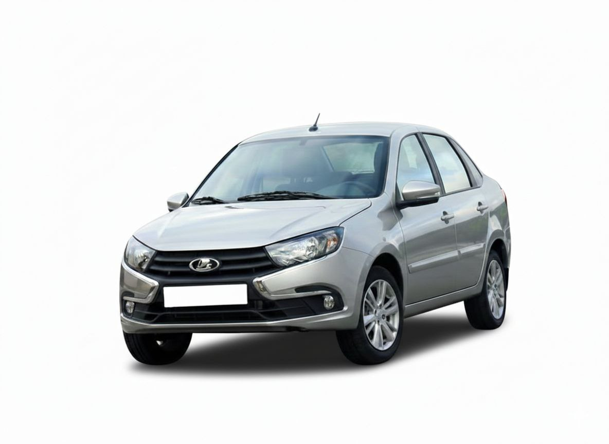
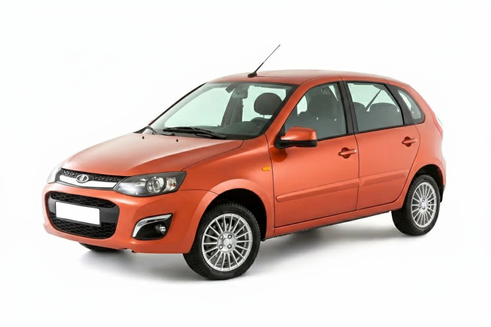
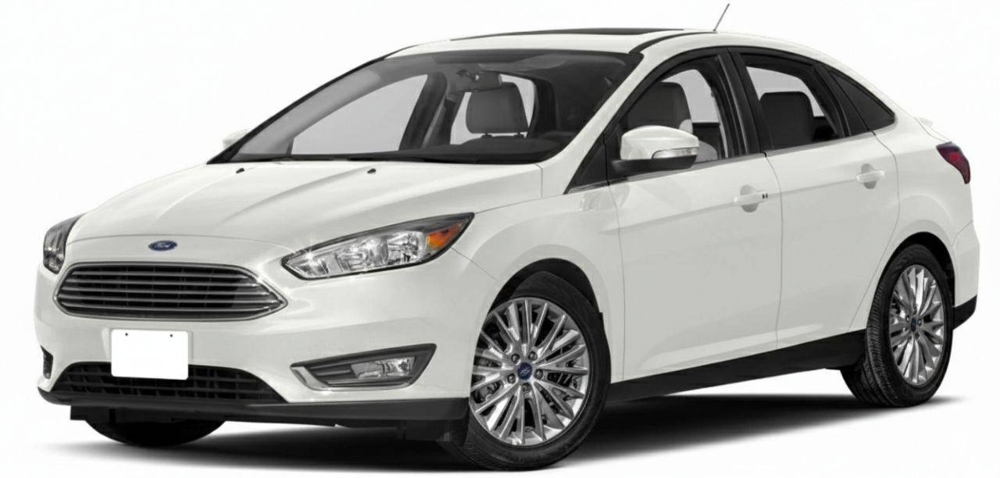
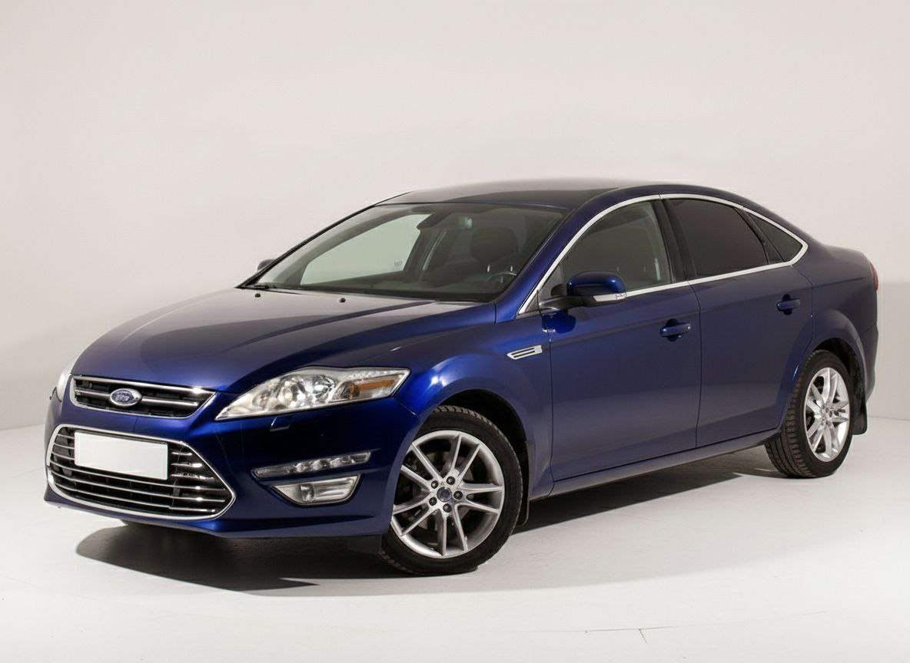
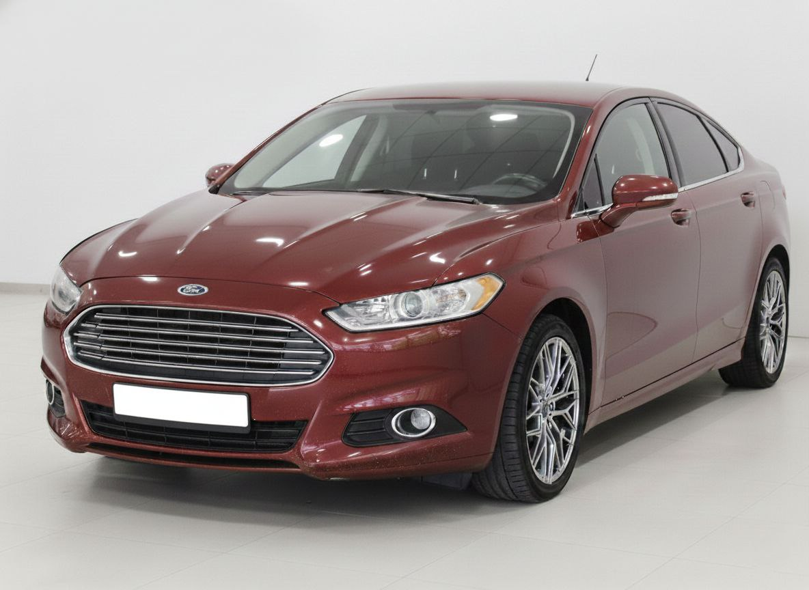
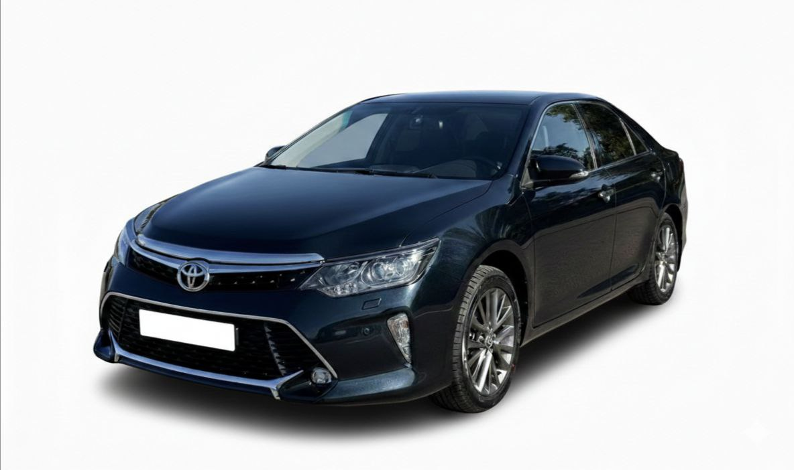
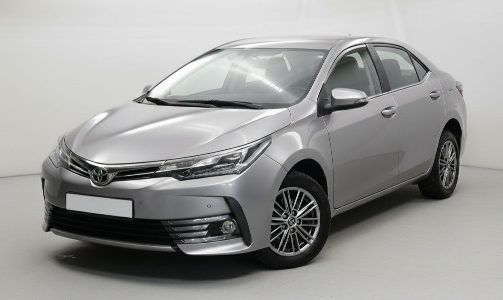
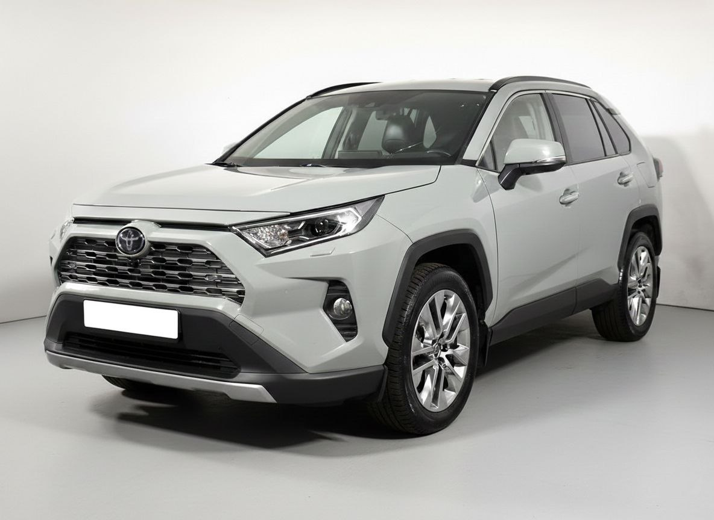

Подбор автомобиля
Выберите автомобиль, который подходит именно вам
Фильтр по параметрам
Каталог автомобилей

Лада Приора
от 450 000 ₽
Год выпуска: 2014
Тип кузова: Седан
Трансмиссия: механическая
Привод: передний
Двигатель: бензин, 1.6 л, 98 л.с.
Расход по трассе: 5.0 л/100км
Для кого подходит:
Автомобиль для тех, кому нужен бюджетный, простой в ремонте и обслуживании транспорт с доступными запчастями.

Лада Гранта
от 530 000 ₽
Год выпуска: 2014
Тип кузова: Седан
Трансмиссия: механическая
Привод: передний
Двигатель: бензин, 1.6 л, 106 л.с.
Расход по трассе: 7.0 л/100км
Для кого подходит:
Подходит широкому кругу покупателей, в первую очередь для тех, кто ищет доступный, надёжный, простой в обслуживании автомобиль.

Лада Калина
от 400 000 ₽
Год выпуска: 2014
Тип кузова: Универсал
Трансмиссия: механическая
Привод: передний
Двигатель: бензин, 1.6 л, 98 л.с.
Расход по трассе: 8.0 л/100км
Для кого подходит:
Подходит широкому кругу водителей, особенно тем, кто ищет доступный, универсальный и простой в обслуживании транспорт.

Ford Focus
от 950 000 ₽
Год выпуска: 2018
Тип кузова: Седан
Трансмиссия: робот
Привод: передний
Двигатель: бензин, 1.6 л, 125 л.с.
Расход по трассе: 7.2 л/100км
Для кого подходит:
Подходит для широкого круга водителей: от молодых людей, ценящих хорошую управляемость, до семей.

Ford Mondeo
от 1 100 000 ₽
Год выпуска: 2013
Тип кузова: Седан
Трансмиссия: автоматическая
Привод: передний
Двигатель: бензин, 2.0 л, 200 л.с.
Расход по трассе: 12.0 л/100км
Для кого подходит:
Подходит для тех, кто ищет просторный, комфортный и недорогой автомобиль среднего класса для семьи или работы.

Ford Fusion
от 1 200 000 ₽
Год выпуска: 2014
Тип кузова: Седан
Трансмиссия: автоматическая
Привод: передний
Двигатель: бензин, 2.5 л, 175 л.с.
Расход по трассе: 7.5 л/100км
Для кого подходит:
Подходит для тех, кто ищет надежный, экономичный и технологичный семейный седан с хорошим соотношением цены и качества.

Toyota Camry
от 1 800 000 ₽
Год выпуска: 2016
Тип кузова: Седан
Трансмиссия: автоматическая
Привод: передний
Двигатель: бензин, 2.5 л, 181 л.с.
Расход по трассе: 8.0 л/100км
Для кого подходит:
Подходит семьям, бизнес-пользователям и тем, кто ценит надежность, комфорт и простор.

Toyota Corolla
от 1 100 000 ₽
Год выпуска: 2017
Тип кузова: Седан
Трансмиссия: вариаторная
Привод: передний
Двигатель: бензин, 1.8 л, 140 л.с.
Расход по трассе: 5.6 л/100км
Для кого подходит:
Подходит почти всем, кто ищет надежный, экономичный и практичный автомобиль для города и семьи.

Toyota RAV4
от 2 200 000 ₽
Год выпуска: 2020
Тип кузова: SUV
Трансмиссия: вариаторная
Привод: 4WD
Двигатель: бензин, гибрид, 2.5 л, 178 л.с.
Расход по трассе: 5.5 л/100км
Для кого подходит:
Подходит для семей, горожан и любителей активного отдыха, ценящих надежность, комфорт и универсальность.
Отзывы владельцев
Алексей Петров
Лада Приора 2014
"Отличный автомобиль за свои деньги. Надежный, экономичный, комфортный для города. Не пожалел о покупке!"
Мария Сидорова
Toyota Corolla 2017
"Покупала для поездок на работу. Не подводит ни разу. Удобный салон и хорошая шумоизоляция. Очень довольна!"
Дмитрий Козлов
Ford Focus 2018
"Автомобиль очень понравился, я относился к нему хуже, он действительно для тех, кто любит и кайфует от вождения."